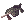
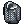
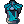
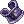

Rebelling against the odds
| This guide has not been updated in a while. | ||
|---|---|---|
| Information on this page may be obsolete and outdated. Please refer to the author for information on future updates. |
||
| Rebellion | |
|---|---|
| Job Base: | Gunslinger |
| Written By: | Fyrus |
Overview
Once the leftover class made by Gravity with subpar survival abilities at the cost of good firepower, Rebels made recently a comeback thanks to a co-joined update between Korean and Japanese servers of Ragnarok Online. Their power and their survivability improved, Rebels are now ready to take the grounds again and shut the people that once doubted them.
I am Fyrus, also known as [GM] Carmin. I worked on this update together with the Staff of NovaRO to make this dream come true. While Gravity changed how this class works compared to their previous iteration, they also make some work on the old Gunslinger skills to make them a bit different, powerful, or even something else altogether. Working the Gunslinger out of nothing and the fear my progress would be wiped at any day, I continued my efforts to hope they would not be wasted.
Look at where we are now.
Stats, your first friend is this world.
Building a Rebel is similar to building an Archer, as they both use DEX to improve their damage, and AGI, to improve their attack speed and flee. Let's go into detail a bit more.
- STR is used for your weight capacity (+30 per point) and to add some minor increase on your damage. This stat is also used to help reduce some statuses. It's up to you about the amount you want to put there, but I wouldn't go above 30 or 50, first, because Gym passes are easy to come by on NovaRO, and second, because you'll probably get more attack out of raising your LUK.
- AGI is a mandatory stat to raise your ASPD and flee (It's possible to build ASPD on some other things too, but mainly for this). Rebels don't have too much of an hard time reaching the maximum ASPD for their skills, but flee is useful to have in some PvM situations.
- VIT is an important stat to raise your max HP and a minor damage decrease. Raising your HP will allow you to survive more things, and it also helps on the Platinum Altar barrier you can get.
- INT is another important stat you can raise to improve your max SP, as some Rebel skills have quite a high SP cost, it's also useful if you stacked on Matk for Magic Bullet. It also makes your cast time slightly faster.
- DEX, What would a ranged class be without Dex ? Not only this is your main source of damage, but it also improves your Hit rate and your cast time more than Int does.
- LUK is a secondary source of damage, but it also raises your Crit rate and your Perfect dodge.
Skills
Skills are an important part of every class in RO, Gunslingers and Rebels have a mechanic similar to Monks and their Spheres in the form of Coins. Skills may have a coin cost associated with them and can be gained by using the skill Coin Flip, or, when you're a Rebel, the Rich's Coin skill. Coins are displayed around the user as floating orbs of light, and each grants a passive +3 Attack boost.
Gunslinger skills
| Skill | SP cost | Coin cost | Delay (seconds) | Notes |
|---|---|---|---|---|
| Coin Flip | 2 | 0 | 0 | |
| Cracker | 10 | 1 | 0 | This skill can stun enemies at a low chance. |
| Increase Accuracy | 30 | 4 | 0 | Increases Hit rate by 20, AGI by 4 and DEX by 4 for 1 minute. Each use consumes four coins. |
| Madness Canceller | 30 | 1 | 3 | Adds a +100 Attack boost and +20% ASPD for 15 seconds at the cost of one coin and locking you in place. You can disable this skill by casting it again for another coin. It does not stack with Adjustments, Heat Barrel and Platinum Altar |
| Adjustments | 15 | 2 | 2 | For 2 coins you receive 20% less range damage and +30 Flee at the cost of -20 Hit. It cannot be used with Madness Canceller. |
| Bull's Eye | 30 | 1 | 1 | Using one coin you can perform a 500% Attack. Useful for starting out. |
| Magic Bullet | 7 | 1 | 0 | Now this is one interesting skill, it has completely changed from its old self. By using a coin, you can get a bonus damage depending on your Matk. If you have stacked lots, it can be useful. |
| Fling | 10 | 1~5 | 0 | Uses up to 5 coins to reduce the enemy's defense. |
| Triple Action | 20 | 1 | 1 | Spend 1 coin to attack 3 times an enemy, similar to Bull's Eyes. |
| Single Action | 0 | 0 | 2 | A passive skill that raises your ASPD and your Hit rate. necessary at some levels to unlock more skills. |
| Chain Action | 0 | 0 | 0 | A passive skill similar to the Thief's Double Attack, It gives you a chance to attack twice with Revolvers. |
| Rapid Shower | 22~40 | 0 | 2 | A powerful Single-target skill than can go upwards to 1000% damage. |
| Desperado | 32~50 | 0 | 1 | Another powerful skill, but AoE this time, in theory this skill can inflict up to 10 hits on all enemies present in the Area of effect, but in practice it does closer to 2-4 hits per enemy. At 550% damage, it can add up quickly. Consumes 10 bullets per cast |
| Gatling Fever | 30~48 | 0 | 1 | Similar to Madness Canceller above, this skill can give you +100 attack and +20% ASPD. It's only useable if you have a Gatling and it slows you down while it's active. |
| Tracking | 15~60 | 0 | 2 | A good single target skill that can do up to 1200% damage, but it has a cast time that's unreductible. |
| Piercing Shot | 11~15 | 0 | 1 | A single-target skill that ignores defense and does more damage with a Rifle. Outclassed by skills mentionned above. |
| Disarm | 15~35 | 0 | 1 | This skill is more of a dueling skill, you can use it to strip someone else's weapon, or to reduce a monster's attack by 25%. |
| Dust | 3~30 | 0 | 1 | This skill can push targets backwards |
| Full Buster | 20~65 | 0 | 1.2~3 | A shotgun single-target skill that deals high damage at the cost of a possibility you'll go Blind. Uses 2 bullets per cast. |
| Spread Attack | 13~60 | 0 | 1 | A shotgun skill that deals damage over an area. Consumes 5 bullets per cast. |
| Ground Drift | 3~30 | 0 | 1 | A Grenade Launcher skill (and the only one Gunslingers can use) that plants a bullet on the ground for some elemental damage. The mine takes the element of the equipped bullet and can last up to 30 seconds |
| Snake Eyes | 0 | 0 | 0 | If you played an Archer, this is a skill similar to Vulture's Eyes, it raises the distance you can shoot at and it gives some Hit. |
Rebel skills
| Skill | SP cost | Coin cost | Delay (seconds) | Cooldown (seconds) | Notes |
|---|---|---|---|---|---|
| Rich's Coin | 10 | 0 | 1 | 3 | A better version of Coin flip that costs you more Zeny to use. Learning this skill will also make failed Coin flips no longer remove a coin. It's also necessary for some other skills. |
| Crimson Marker | 10 | 1 | 0 | 1 | Marking a targets allows you to track it on your map and make some skills do higher damage (in the case of Dragon Tail, you need it to do any damage). Lasts 50 seconds. |
| Quick Draw Shot | 5 | 0 | 0 | 0 | This skill is similar to using a Monk's Chain Combo over Triple Attack, it does additionnal attacks if you use it after Chain Action's or Eternal Chain's effects. Marked targets takes additional damage from this skill, and Marked targets that you're not actively attacking also receives damage from this skill. |
| Eternal Chain | 45 | 1 | 1 | 0 | Simply enough, that skills allows the use of Chain Action over any weapon, and not just Revolvers. |
| Platinum Altar | 16~36 | All | 0 | 0 | This skill can Only be used if your bullets are Holy, other elements will Not work. By spending all of your coins, this skill raises your Attack by the number of coins spent and dress up a barrier equal to 25% of your max HP (at level 5). It's highly recommended to have it as most endgame monsters are weak to Holy. It cannot be used with Heat Barrel and Madness Canceller. |
| Heat Barrel | 30 | All | 1 | 100~80 | Using his skill will give you a flat attack increase by the number of coins spent that's considered Neutral property. It works pretty well with Autoattacking builds. Switching any gear will cancel this buff, and it cannot be used with Madness Canceller and Platinum Altar. |
| Flicker | 2 | 0 | 0 | 0 | This skill will detonate all the Binding Traps and Howling Mines present in your screen. If you don't detonate them, these skills will not do any damage. |
| Binding Trap | 30~38 | 1 | 2.5~0.5 | 10 | Despite being called a Trap, it's not really one. Instead it slows down any player that walks on it (save for the user) For 14 seconds. This effect is reduced by the target's Str. Requires Special alloy traps to use. |
| Shattering Storm | 50~70 | 0 | 2 | 0 | A shotgun skill that can break the target's hats at a low chance. It's quite powerful for a Shotgun skill and can be used for early levelling. |
| Banishing Buster | 55~75 | 0 | 2 | 0 | A single-target shotgun skill that dispells the target's buffs. It can be useful in some PvM scenarios but it's more useful in PvP. |
| Slug Shot | 80~96 | 0 | 1 | 5 | Another single target shotgun skill that's probably the most single powerful skill in the entire game, and it does come with an insane cast time to compensate for it. It's damage is also increased depending on the target's Size. Required Slug ammunitions to use and is Forced Neutral. |
| Mass Spiral | 40~56 | 0 | 1 | 2 | The improved version of Piercing Shot, it deals more damage according to the target's defense. But it's damage is low to begin with so ... |
| Anti-Material Blast | 80~96 | 0 | 1 | 5 | A single-target skill that reduces a target's Player resistance. It's useful to use it on high-HP monsters or high priority targets to quicken the time dealt with them. |
| Hammer of God | 35~55 | All | 2 | 30 | A targetted skill similar to Crimson Rock, that deals more damage depending on the coins used and if the target was marked or not. This skill is Forced neutral. |
| Fallen Angel | 10 | 1 | 0 | 0 | Another skill that completely changed functions. It's now a movement-skill like Snap that allows its user to move from cell to cell quickly. Using Desperado after this skill Doubles its damage. |
| Fire Dance | 12~20 | 0 | 0.5 | 0 | A slightly improved version of Desperado for less bullets, but it does overall less damage than Desperado. It's more consistent, however. |
| Howling Mine | 40~60 | 0 | 1 | 5~3 | This skill plants a mine on an enemy that must then be detonated by Flicker. It does good damage but requires the use of a Grenade Launcher. |
| Dragon Tail | 60~100 | 0 | 2 | 5 | This skill can only be used if there is a target marked around you. It fires a high-damage missile at up to 3 targets. The high attack of Grenade Launchers can make this skill quite deadly. This skill is Forced neutral. |
| Fire Rain | 70 | 0 | 1 | 5 | Shoots a column of fire that moves towards a 3x10 area for high damage. It's a good skill early on and can still be useful later on. |
| Round Trip | 40~60 | 0 | 1 | 3~1 | Deals damage in a large area around the user for high damage, if targets collide into a wall, they'll take additionnal damage from this. At level 5 it's quite spammable and can be used to get out of some tight situations due to its large AoE. Consumes 5 bullets. |
Your equipment and you.
Weapons
Unlike most other classes, Rebels have the largest selection of weapon types available to them. While Gunslingers didn't need for Grenade Launchers or Rifles, Rebels can make pretty good use of each type. Sadly higher guns are a lot expensive for starters, so it's recommended to use a Merchant's Overcharge to buy them. All these weapons can be bought from the Firearms merchant in Prontera. (/navi prontera 139/225). To use these, you will also need bullets, that can be bought at the Ammo dealer (/navi prontera 142/228)
| Weapon | Type | Notes |
|---|---|---|
 Heaven's Feather & Hell's Fire [1] Heaven's Feather & Hell's Fire [1]
|
Revolver | a pretty good starting gun that raises' Desperado's damage by 20% and a chance to inflict Burning on the target. |
 Altair & Ares Altair & Ares
|
Revolver | a high performance gun that raises Ranged damage by 30%. It'll be pretty much your go-to unless you need the slot. |
 Color Scope [2] Color Scope [2]
|
Rifle | a powerful rifle focused on damage, outfitted with 2 slots to even boost its tremendeous power further. |
| RAG203 | Rifle | a rifle that comes with 20 more attack. It can also cast Decrease Agility on targets. |
 Death Fire [1] Death Fire [1]
|
Shotgun | The most powerful shotgun you can use, and you can use it earlier than the others even ! With its slot, you can boost its damage further again. |
 Rolling Thunder [1] Rolling Thunder [1]
|
Shotgun | This shotgun trades attack for the ability to autocast Thunder Storm. Not really worth the damage loss. |
|  Peace Breaker | Shotgun | Lower damage again but you get instead an increased ASPD rate. Useful for the splash damage all shotguns share and the ASPD. |
 Mini Mei [2] Mini Mei [2]
|
Gatling | An accessible gatling that you can card for more power. Useful at early levels and if you need the slots. |
| Tempest | Gatling | A more powerful gatling boosting Range damage by 20%. |
| End of the Horizon [1] | Grenade Launcher | A simple grenade launcher accessible early on if you want to play with Howling Mine and Dragon Tail to level. |
| Southern Cross | Grenade Launcher | The most powerful gun available to Rebels. |
 Archer Skeleton Archer Skeleton
|
10% Long range damage increase, like other long range increases, it gets less effective the more you have. |
 White Knight White Knight
|
20% additionnal damage to medium and large size monsters and +15 Atk. Classes that stack long range bonuses like Rebels and Rangers will usually like that card, as it provides a better boost to their damage. |
 Aunoe or Aunoe or
|
20% additionnal Critical damage (The Paper cost 1 SP per attack to use, but is easier to find). Good for Critical builds |
 Drosera Drosera
|
15% additionnal Critical rate when used with long-range weapons. |

Shields
 Valkyrja's Shield [1] or
Valkyrja's Shield [1] or  Immune Shield [1] are probably your most common options, with either one of the common racial reductions cards.
Immune Shield [1] are probably your most common options, with either one of the common racial reductions cards.
Hats
| Headgear | Obtention | Notes |
|---|---|---|
 Airship Captain's Hat [1] Airship Captain's Hat [1]
|
Cash Shop | Your best option for the top headgear, as it gives +7% long range attack. |
 Fox Ears ribbon [1] Fox Ears ribbon [1]
|
Cash Shop | The best option to increase ASPD and has a chance to boost your range damage and critical rate. |
 Rideword Hat [1] Rideword Hat [1]
|
Cash Shop, can also be made via a quest. | This hat can leech up HP/SP based on your damage, useful in recovering SP |
 Sigrun's Wings Sigrun's Wings
|
Cash Shop | A good middle gear that raises Range damage by 2%. Alternatively you can use any mid-slotted headgear. |
 Gangster's Scarf / Gangster's Scarf /  Well-chewed Pencil Well-chewed Pencil
|
Cash Shop, the Scarf can also be made via a quest. | Those two are pretty good lower headgears you can use. Scarf gives 5 more attack, while the Pencil gives more Hit, which is always welcome in some situations. |
 Dark Pinguicula / Essence of Evil STR 3 Dark Pinguicula / Essence of Evil STR 3
|
Those two can give you more attack overall than getting more dex in your hats, due to how attack calculations work in Renewal. |
Armors
| Armor | Obtention | Notes |
|---|---|---|
|  Glittering Jacket [1] | Monster Drop | A common armor you can get with reasonable defense. You can also enchant it with stats in Prontera. |
|  Armor of Gray [1] | Ghost Palace | A more defensive armor, but you cannot enchant it. You can obtain it by doing the Ghost Palace instance, but you cannot enchant it. |
| Army Padding | Artifact Panhandler in Mora | This armor foregoes defense for a higher range of possible enchants. It's also quite easy to obtain doing Mora quests. |
 Glorious Suit Glorious Suit
|
Battlegrounds | It has 20% more HP, but no slot. You can get this at the Battlegrounds. |
 Airship Armor Airship Armor
|
Airship Assault | Works as a combo with  Airship Manteau [1] and Airship Manteau [1] and  Airship Boots for more HP/SP and pretty good defense, but it doesn't have a slot. Airship Boots for more HP/SP and pretty good defense, but it doesn't have a slot.
|
 Porcellio Porcellio
|
Gives you 25 more attack at the cost of -5 defense. A good card to increase your damage. |
 Bathory Bathory
|
Enchants your armor with the shadow property, it allows you to resist many nasty skills in PvM situations. |
Garments
| Garment | Obtention | Notes |
|---|---|---|
 Heroic Backpack [1] Heroic Backpack [1]
|
Loyalty Shop, Monster Hunter Shop, Battlegrounds Shop | An all-around garment that gives bonuses if the refine is at least +7 and other bonuses for a +9. A nice and accessible garment to overrefine. |
Airship Manteau [1] /  +9 Ferlock's Cloack [1] +9 Ferlock's Cloack [1]
|
Airship Assault | Those garments are more specialized on neutral reduction and cast time reduction, which can improve your survivability and your Slug Shot cast time. Ferlock's is just a better version of the Airship Manteau at +9 only |
 Giant Snake Skin [1] Giant Snake Skin [1]
|
Faceworm's Nest | A garment that is randomly enchanted with stats and special enchants unique to these. Useful for the stat boost they provide and you can use them with Temporal boots for a HP/SP bonus. |
 Raydric Raydric
|
This card reduces the Neutral damage you take by 20%. It's a good survivability card useful in almost all situations. |
 Cenere Cenere
|
This card gives +2% ASPD for every 10 base Agi you have. Useful to increase your ASPD with guns other than Gatlings or Revolvers. |
 Menblatt Menblatt
|
This card gives +1% long-range damage for every 10 Dex you have. Useful for more damage. |
Shoes
| Shoes | Obtention | Notes |
|---|---|---|
| Airship Boots
|
Airship Assault | Good starter shoes with reasonable defense. |
 Enhanced Variant Shoes [1] Enhanced Variant Shoes [1]
|
Loyalty Shop, Monster Hunter Shop, Battlegrounds Shop | Reasonable shoes that you can obtain at the Loyalty shop or from Monster Hunter and Battlegrounds. |
| Temporal Boots | Old Glast Heim | The best overall shoes you can use. Dex helps your damage and reduces your Fixed cast time, Agi improves your ASPD, and LUK boosts your Critical damage. Enchants can also be performed on these. |
 Firelock Soldier / Firelock Soldier /  Verit / Verit /
|
All those card gives you more HP (and SP for the first 3). There aren't many other choices for cards in the shoes. |


Accessories
| Accessory | Obtention | Notes |
|---|---|---|
 Physical Enhancer Ring [1] Physical Enhancer Ring [1]
|
Geffen Magic Tournament | A good damaging accessory, but tedious to obtain. |
 Pendant of Maelstorm [1] Pendant of Maelstorm [1]
|
Nightmarish Jitterbug | A slightly better and easier accessory to acquire than the one above, but the Maelstorm autocast may get in your way. |
 Sheriff Badge Sheriff Badge
|
Battlegrounds | A nice damaging accessory that comes with useful stats, but no slot. |
 LUK Glove [1] LUK Glove [1]
|
Eclage | A nice accessory for Critical builds, obtainable in Eclage. |
|  Silverwork Bracelet [1] | Old Glast Heim | Common accessories from the Old Glast Heim instance, useful for common cards such as  Creamy. Creamy.
|
 Bakonawa Agimat Tattoo Bakonawa Agimat Tattoo
|
Pintados Festival | A pretty good accessory for ASPD, but the attack bonus uses a script that doesn't give as much as the other accessories cited above. |
 Gold Scaraba Gold Scaraba
|
All you need in your slots for damage. |
Leveling tips
Gunslingers and Rebels have high damaging skills that can come in handy while mobbing, but their skills have sometimes high SP costs or ammo requirements, especially considering the steep price of bullets over arrows.
As a Novice
While your stats may not look like it, you are strong enough to punch Porings south of Prontera and get your first needed job skills points. The Criatura academy can also give you tips and pointers, along with levels, and changing your job class within its walls. You can also change your job in Prontera by talking to the Job Master, and doing so will give you a freebie box of consumable and other useful things.
As a Gunslinger
Now that you can use guns and shoot monsters, you're usually given a Novice gun to help you early on. Take some bullets and head to Payon then to the east, there you can find Spores to help you on early leveling and getting skills
After level 26, go to Eden (@go eden), register by talking to Evenor Lime, then talk to Boya. She will give you a hunting quest for Payon Cave (you can access it via the warper) but you may want to take some Silver Bullets first. When at the cave, head outside, and talk to the Eden Group Member Karl. He will ask you to hunt Skeletons and Poporings in the cave. Once this is done and you talk to him, you can go back to Eden and talk to Boya to get better starting equipments. You can continue leveling in Payon cave floors 1 and 2 until you're base level 40-45.
After you're done with Payon Cave, you may head to Orc Dungeon and start mobbing there (via Desperado preferably). This is a good place to level up until the 65-70 level range. You may also go to Eden and take another hunting quest for this dungeon once you're base level 50, which will give you again, a more powerful weapon and armors. You can find the Eden Group Member Hooksha outside of Orc Dungeon when you first warp in.
Further down at base level 70, you can get a mission from Ur at Eden for Glast Heim St. Abbey, where the Eden Member Johan waiting outside of it. Like before, this quest will give you the most powerful equipment Eden can offer you at this level. For this quest you wil have to hunt Wraiths and Evil Druids.
At this point you might be around level 80-85 with pretty good equipment from Eden. You may do Eden board missions of your level to keep progressing and get exp, or you can also start doing Gramps quests. They're big hunting quests designated for parties that give a lot of experience and levels.
If you feel more like going solo, you can go to other places like Turtle Island, Ice Cave, East field from Rachel, or South field from Veins. Using either of those options, you can continue progressing up until level 99. When you do, you can job change into a Rebellion.
As a Rebellion
Now that you are a Rebel, you will gain access to more weapons and more importantly, skills to make deadly use of them.You can continue to do Gramps and Eden Boards quests to level, but if you ever run out of ideas (or waiting for your cooldowns to run out), here are a few suggestions:
Level 99-110 : Pinguiculas east of Splendide are a nice place, although Luciolas might hurt at this point. If you're feeling adventurous or good at mobbing, you could try to level in Magma Dungeon F2.
Level 110-120 : You can either choose to stay in Magma a bit more or move up to Juperos and Rachel Sanctuary F1, both are pretty good place to mob, though Juperos has a lot of people in it.
Level 120-130 : Like before you can continue up a bit on the previous places I mentioned or move up to to the Scaraba Hall, The second floor might be a bit hard at first and it's recommended you try the first. You also have to keep watch of the Queen Scaraba that spawns around.
Level 130-140 : Staying in the Scaraba hall and continuing to level via the boards and Gramps can be the wisest option at this point. You can also go to Bio Labs F1 and F2, but it's quite hard if you're not experienced.
Level 140-175 : At this point you can do a lot of instances and Verus dailies at Phantasmagorica as they give a lof of experience and the monsters are easy to deal with with most Rebel skills. Instances, MvPs and high level dungeons will be the bulk of your experience and the pinnacle of your abilities and your understanding of the whole class. You can continue to solo the Eden boards, but at this point you'll get more experience by partying with other people.
Closing notes
This guide was made via the data I gathered by leveling my own gunslinger on kRO and understanding the gist of what had changed, for both Gunslingers and Rebels. I tried to put up the most information about everything that can be useful, but if you find any inconsistencies or errors, feel free to contact me directly via Discord (@Fyrus#5570) Or via the forums